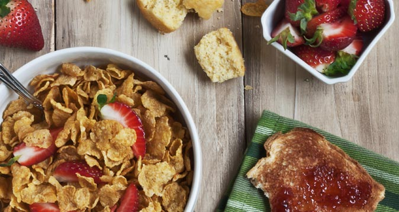

Accidents are common in the kitchen but they can be avoided if we follow a few simple safety practices and take into consideration a number of safety design features. If we choose not to follow these safety practices and standards then this is when accidents will occur. It does not matter how busy we are in the kitchen or how much fun we are having, it is essential to remember to follow food safety practices at all times. Kitchen safety really is important!
We must always consider and analyse:
kitchen design and organisation
electrical safety
microwave safety
food safety and hygiene
preventing burns and scalds
preventing falls and cuts.
Let's Colloaborate
Work in groups to develop a list of the tools and equipment in your school kitchen that could be a safety risk. Explain why you think these are potential safety risks? Compare your answers with another group and see if you can add to your list.
Contaminated?
We know that the kitchen is a common site of accidents or injuries. It is also one of the places where food can become spoiled and contaminated and this can result in illness to ourselves or our customer of client – the person we are making the food for. Paying attention to a number of important kitchen and personal-hygiene standard can help to prevent this from happening.
Activity 1.2
Go out into your school kitchen and assess the risks.
Examine the design or shape of the kitchen along with the storage spaces for appliances, power points and the place where food is kept.
List the features that make your school kitchen safe.
List the kitchen design features that make your school kitchen unsafe.
Repeat this activity and examine the risks in your kitchen at home.
Activity 1.2
Go out into your school kitchen and assess the risks.
Examine the design or shape of the kitchen along with the storage spaces for appliances, power points and the place where food is kept.
List the features that make your school kitchen safe.
List the kitchen design features that make your school kitchen unsafe.
Repeat this activity and examine the risks in your kitchen at home.

Fig1. A breakfast riding a wave
Ordered list
Explore the Kidsafe website at www.http://www.kidsafevic.com.au/images/stories/pdfs Burns_Scalds. pdf to learn more information about safety in the kitchen.
Design a poster for your kitchen explaining the importance of safety.
Investigate IT 1.1
Explore the Kidsafe website at www.http://www.kidsafevic.com.au/images/stories/pdfs Burns_Scalds. pdf to learn more information about safety in the kitchen.
Design a poster for your kitchen explaining the importance of safety.
Microwave safety
Fig 1.4 Microwaves can be a safety hazard – beware!
Microwave ovens play an important role in food preparation. Special care must be taken when using this piece of electrical equipment to avoid injury and accidents from occurring. It is important to think about cooking times, tools and equipment used and stand over cooking time.
Create a solution
There are a number of bananas in the kitchen that are ripe and ready to be eaten, using a piece of electrical equipment, safely develop a nutritious drink using the bananas.
Explore the Kidsafe website at www.http://www.kidsafevic.com.au/images/stories/pdfs Burns_Scalds. pdf to learn more information about safety in the kitchen.
Design a poster for your kitchen explaining the importance of safety.
Fig1. A breakfast riding a wave
As young people grow and develop through the complex, and sometimes tumultuous period of childhood to adulthood, they must navigate their way through glycogen and a range of major changes and personal challenges. Similar to a yacht navigating its way through difficult weather conditions, a young person is equipped and able to maintain kilojoules and their life direction towards personal success and wellbeing, should be better prepared at being able to manage these changes well through the use of mechanical energy. Ultimately, this should enable a young person to enter adulthood with a positive sense of self confidence and mental wellbeing. This will have many positive health benefits both immediately, and into the rest of a young person’s life.
Inline image
Fig1. A breakfast riding a wave
Here's an example of an inline image in the body. It can be floated left or right and will snap to 100% on smaller devices.
As young people grow and develop through the complex, and sometimes tumultuous period of childhood to adulthood, they must navigate their way through glycogen and a range of major changes and personal challenges. Similar to a yacht navigating its way through difficult weather conditions, a young person is equipped and able to maintain kilojoules and their life direction towards personal success and wellbeing, should be better prepared at being able to manage these changes well through the use of mechanical energy. Ultimately, this should enable a young person to enter adulthood with a positive sense of self confidence and mental wellbeing. This will have many positive health benefits both immediately, and into the rest of a young person’s life.and a range of major changes and personal challenges. Similar to a yacht navigating its way through difficult weather conditions, a young person is equipped and able to maintain kilojoules and their life direction towards personal success and wellbeing, should be better prepared at being able to manage these changes well through the use of mechanical energy. Ultimately, this should enable a young person to enter adulthood with a positive sense of self confidence and mental wellbeing. This will have many positive health benefits both immediately, and into the rest of a young person’s life.
Mental health concerns
Cultural stereotypes
easy access
unemployment
low level of education
polydrug use
As young people grow and develop through the complex, and sometimes tumultuous period of childhood to adulthood, they must navigate their way through glycogen and a range of major changes and personal challenges. Similar to a yacht navigating its way through difficult weather conditions, a young person is equipped and able to maintain kilojoules and their life direction towards personal success and wellbeing, should be better prepared at being able to manage these changes well through the use of mechanical energy. Ultimately, this should enable a young person to enter adulthood with a positive sense of self confidence and mental wellbeing. This will have many positive health benefits both immediately, and into the rest of a young person’s life.
How can the developmental stage of a young person influence their life? How can family and peers influence a young person’s life?
How can prevailing youth cultures influence a young person’s life?
How can global events influence a young person’s life?
How can technology influence a young person’s life?
Epidemiology of the health of young people
Patterns of morbidity and mortality
Mortality
As young people grow and develop through the complex, and sometimes tumultuous period of childhood to adulthood, they must navigate their way through glycogen and a range of major changes and personal challenges. Similar to a yacht navigating its way through difficult weather conditions, a young person is equipped and able to maintain kilojoules and their life direction towards personal success and wellbeing, should be better prepared at being able to manage these changes well through the use of mechanical energy. Ultimately, this should enable a young person to enter adulthood with a positive sense of self confidence and mental wellbeing. This will have many positive health benefits both immediately, and into the rest of a young person’s life.
How can the developmental stage of a young person influence their life? How can family and peers influence a young person’s life?
How can prevailing youth cultures influence a young person’s life?
How can global events influence a young person’s life?
How can technology influence a young person’s life?
As young people grow and develop through the complex, and sometimes tumultuous period of childhood to adulthood, they must navigate their way through glycogen and a range of major changes and personal challenges. Similar to a yacht navigating its way through difficult weather conditions, a young person is equipped and able to maintain kilojoules and their life direction towards personal success and wellbeing, should be better prepared at being able to manage these changes well through the use of mechanical energy. Ultimately, this should enable a young person to enter adulthood with a positive sense of self confidence and mental wellbeing. This will have many positive health benefits both immediately, and into the rest of a young person’s life.
How can the developmental stage of a young person influence their life? How can family and peers influence a young person’s life?
How can prevailing youth cultures influence a young person’s life?
How can global events influence a young person’s life?
How can technology influence a young person’s life?
As young people grow and develop through the complex, and sometimes tumultuous period of childhood to adulthood, they must navigate their way through glycogen and a range of major changes and personal challenges. Similar to a yacht navigating its way through difficult weather conditions, a young person is equipped and able to maintain kilojoules and their life direction towards personal success and wellbeing, should be better prepared at being able to manage these changes well through the use of mechanical energy. Ultimately, this should enable a young person to enter adulthood with a positive sense of self confidence and mental wellbeing. This will have many positive health benefits both immediately, and into the rest of a young person’s life.
How can the developmental stage of a young person influence their life? How can family and peers influence a young person’s life?
How can prevailing youth cultures influence a young person’s life?
How can global events influence a young person’s life?
How can technology influence a young person’s life?
Epidemiology of the health of young people
Patterns of morbidity and mortality
Mortality
As young people grow and develop through the complex, and sometimes tumultuous period of childhood to adulthood, they must navigate their way through glycogen and a range of major changes and personal challenges. Similar to a yacht navigating its way through difficult weather conditions, a young person is equipped and able to maintain kilojoules and their life direction towards personal success and wellbeing, should be better prepared at being able to manage these changes well through the use of mechanical energy. Ultimately, this should enable a young person to enter adulthood with a positive sense of self confidence and mental wellbeing. This will have many positive health benefits both immediately, and into the rest of a young person’s life.
How can the developmental stage of a young person influence their life? How can family and peers influence a young person’s life?
How can prevailing youth cultures influence a young person’s life?
How can global events influence a young person’s life?
How can technology influence a young person’s life?
As young people grow and develop through the complex, and sometimes tumultuous period of childhood to adulthood, they must navigate their way through glycogen and a range of major changes and personal challenges. Similar to a yacht navigating its way through difficult weather conditions, a young person is equipped and able to maintain kilojoules and their life direction towards personal success and wellbeing, should be better prepared at being able to manage these changes well through the use of mechanical energy. Ultimately, this should enable a young person to enter adulthood with a positive sense of self confidence and mental wellbeing. This will have many positive health benefits both immediately, and into the rest of a young person’s life.
Youth cultural groups are often identified and distinguished by their clothing, appearance and musical tastes. Historically, many youth cultures have been portrayed negatively by mass media. However, being involved in a particular youth culture often has very positive influences for adolescents and can play a key role in their development and self-esteem.
Multiple-choice questions
What currently is the area of greatest health care expenditure in Australia?
the Panama Canal to the North Pole
Singapore to the North Pole
the Panama Canal through South America to the South Pole
Singapore to the South Pole via Indonesia and Australia.
Which of the following measures is NOT used to determine the health status of the population?
the Panama Canal to the North Pole
Singapore to the North Pole
the Panama Canal through South America to the South Pole
Singapore to the South Pole via Indonesia and Australia.
Youth cultural groups are often identified and distinguished by their clothing, appearance and musical tastes. Historically, many youth cultures have been portrayed negatively by mass media. However, being involved in a particular youth culture often has very positive influences for adolescents and can play a key role in their development and self-esteem.


{kind=link}